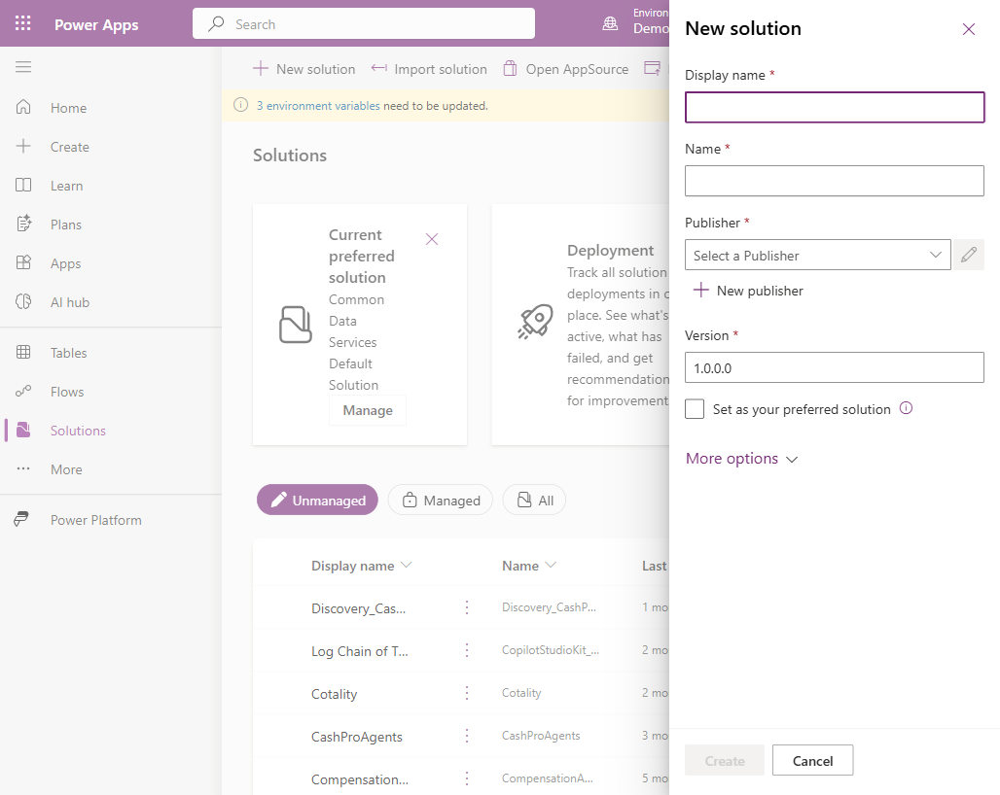
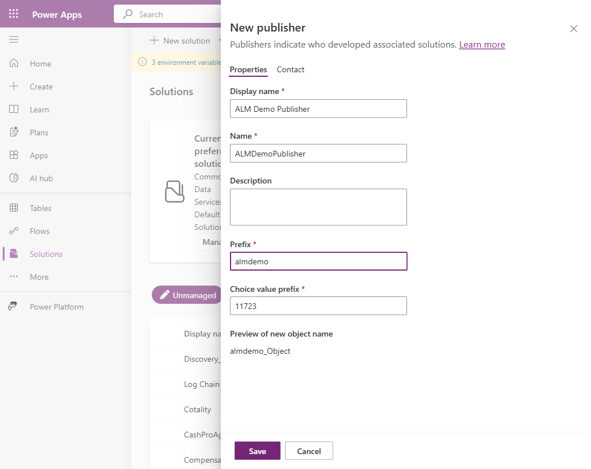
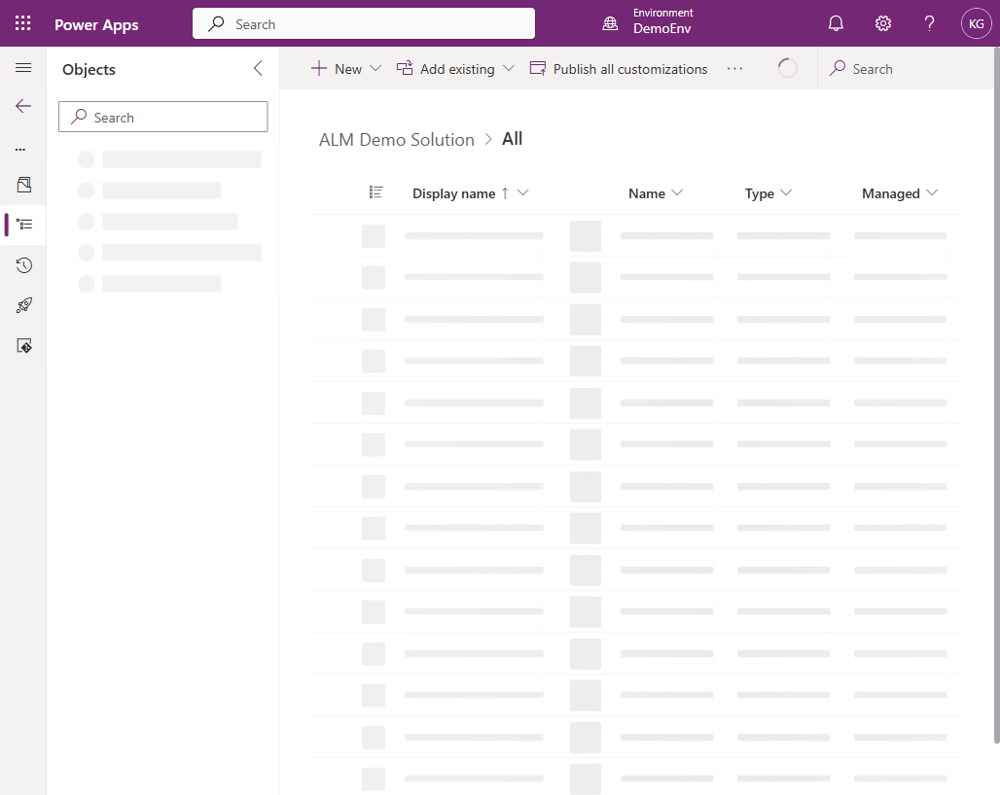
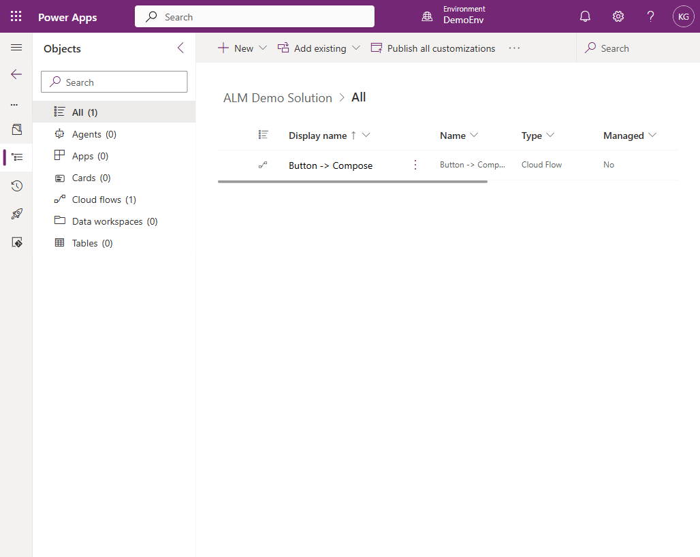
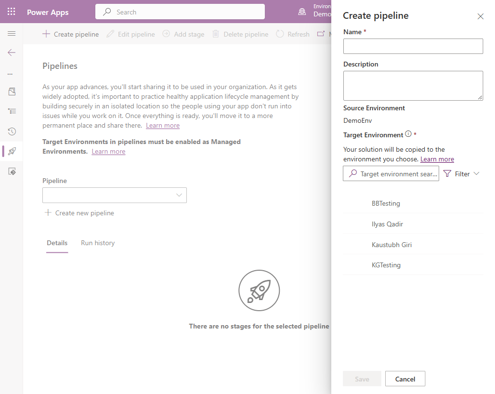
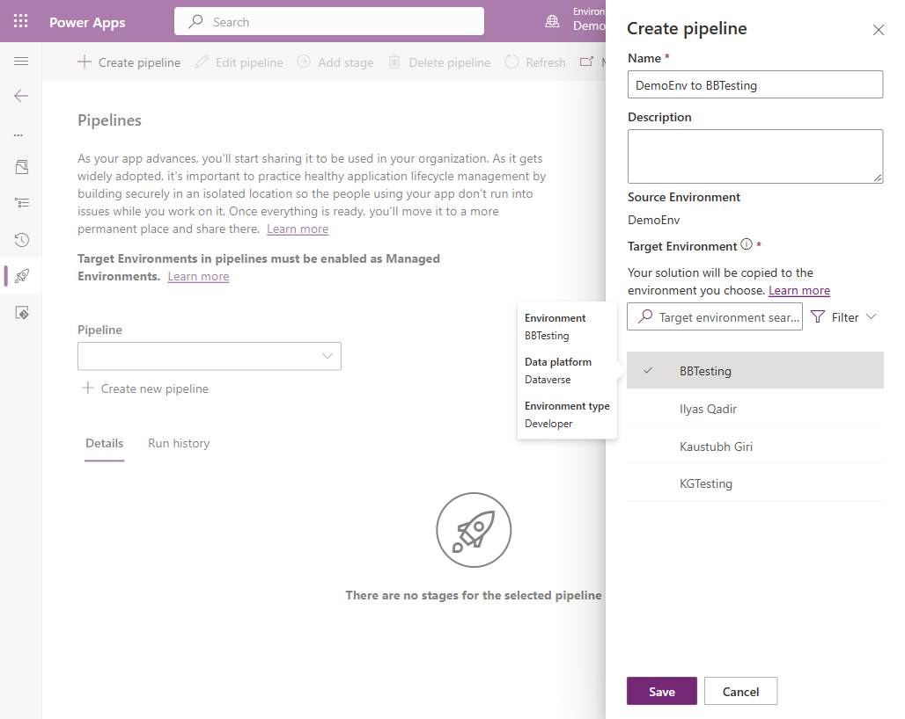
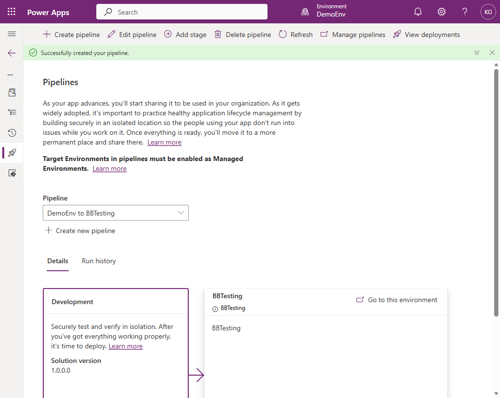
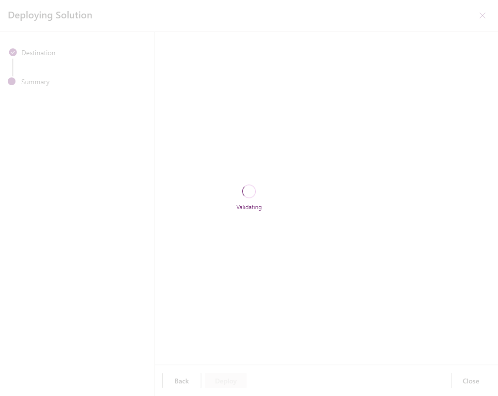
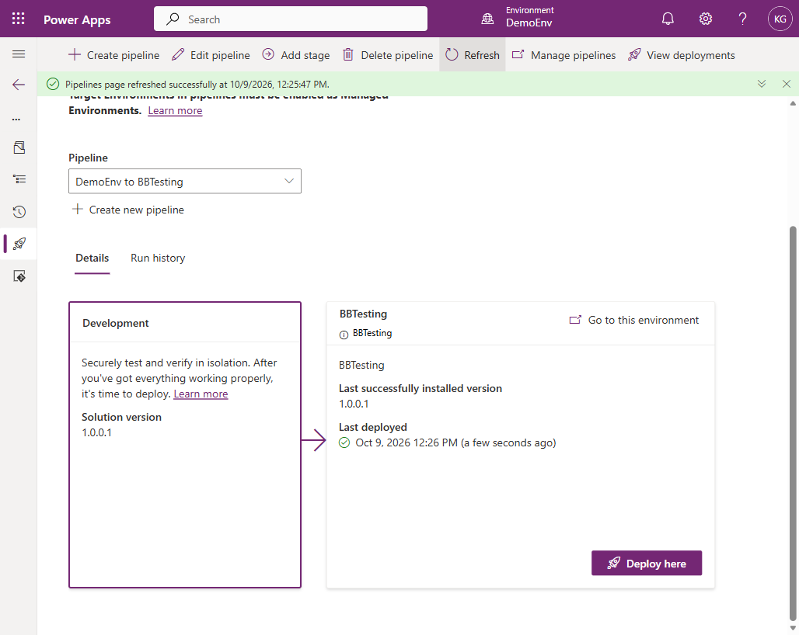
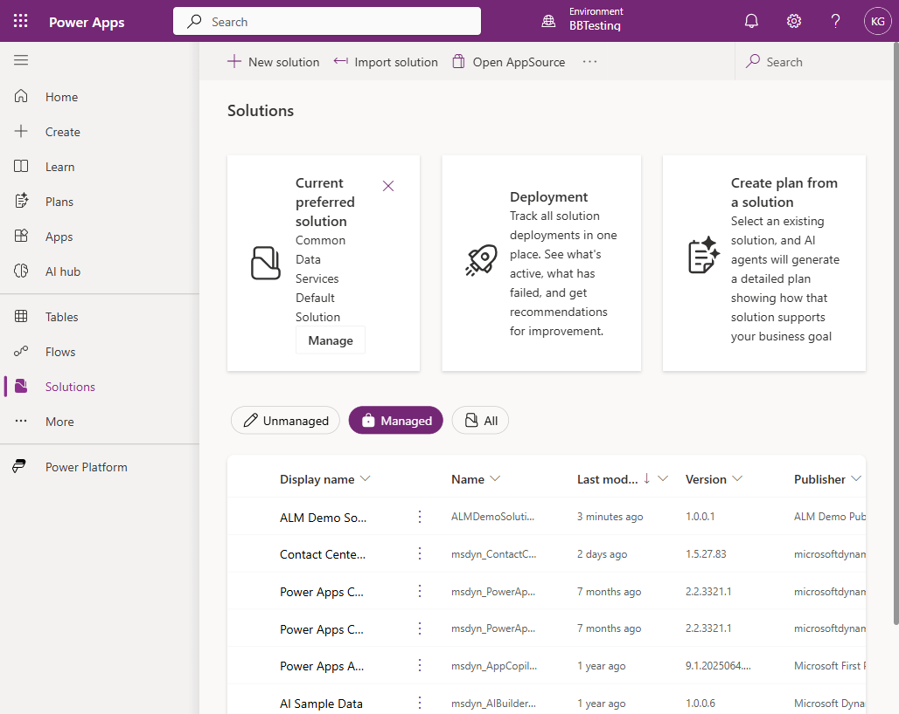

On this page
Why ALM matters
Application Lifecycle Management keeps your production Power Apps and Power Automate flows stable while you keep building and testing. Instead of editing live apps directly in production, you build in an isolated Development environment, package your work into a Solution, and use a Pipeline to promote it safely to Test and eventually Production.
Microsoft's current (2026) recommended approach for this is:
- Solutions — the container that holds your apps, flows, tables, and other components
- Power Platform Pipelines — the built-in, no-code deployment tool that moves solutions between environments in a few clicks
- Go to
make.powerapps.comand select your Development environment from the environment switcher (top right). - In the left navigation, select Solutions → + New solution.
- Enter a Display name (e.g.
ALM Demo Solution). - Click + New publisher and provide:
- Display name (e.g.
ALM Demo Publisher) - Name (e.g.
ALMDemoPublisher) - A short Prefix (e.g.
almdemo)
- Display name (e.g.
- Click Create.
almdemo_MyTable) so it never collides with Microsoft's or another publisher's component names.


Inside your new solution, click New and choose what you want to build:
- App — Canvas or model-driven app
- Automation → Cloud flow — Power Automate flow
- Table — Dataverse table

Power Platform Pipelines is Microsoft's modern, no-code ALM tool — it replaced manual export/import. It's enabled tenant-wide by default (the "platform host"), so no admin setup is required for personal use.
- Open your solution → left navigation → Pipelines tab.
- Click Create new pipeline.
- Give it a name (e.g.
Dev to Test). - Source Environment automatically fills in as your current (Dev) environment.
- Choose your Target Environment (your Test or sandbox environment) from the list.
- Click Save.



- On the Pipelines screen, click Deploy here under your target environment's card.
- Confirm the pipeline, target, and schedule (choose Now) → click Next.
- Review the summary — the version number auto-increments (e.g.
1.0.0.0 → 1.0.0.1) and an AI-generated deployment note is included. - Click Deploy.
- Wait roughly 30–60 seconds. Status will update to "Last successfully installed version X.X.X.X".


- Switch to the target environment.
- Go to Solutions → filter by Managed.
- Your solution appears there as read-only/managed.

Golden Rules to keep ALM healthy
- Always build in Dev (unmanaged), always deploy as Managed downstream.
- Never edit components directly in a Managed environment — edit in Dev, then redeploy through the pipeline.
- Keep Dev / Test / Production as separate environments — one Dataverse database per environment.
- Use the same publisher and prefix for a given solution across its entire lifecycle.
- For multiple developers or solutions, consider adding source control (Git) via the Pipelines "Source control" tab for full version history.